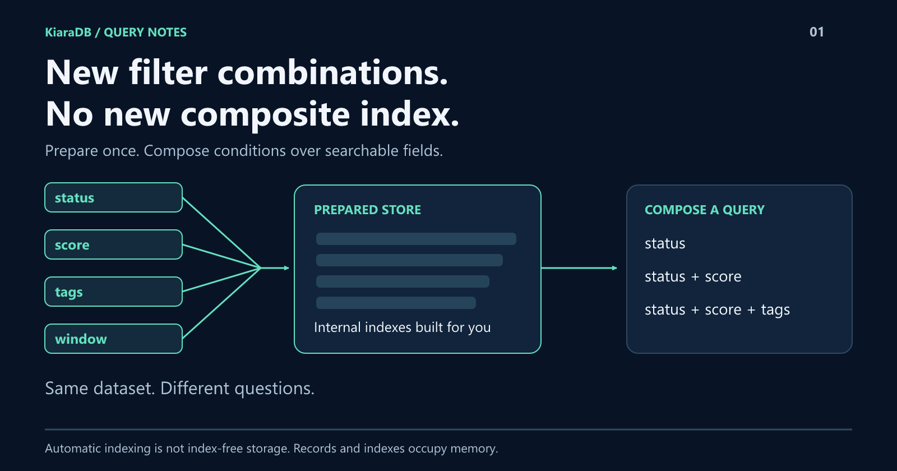
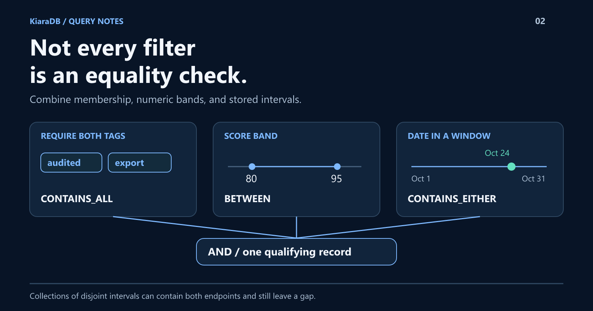
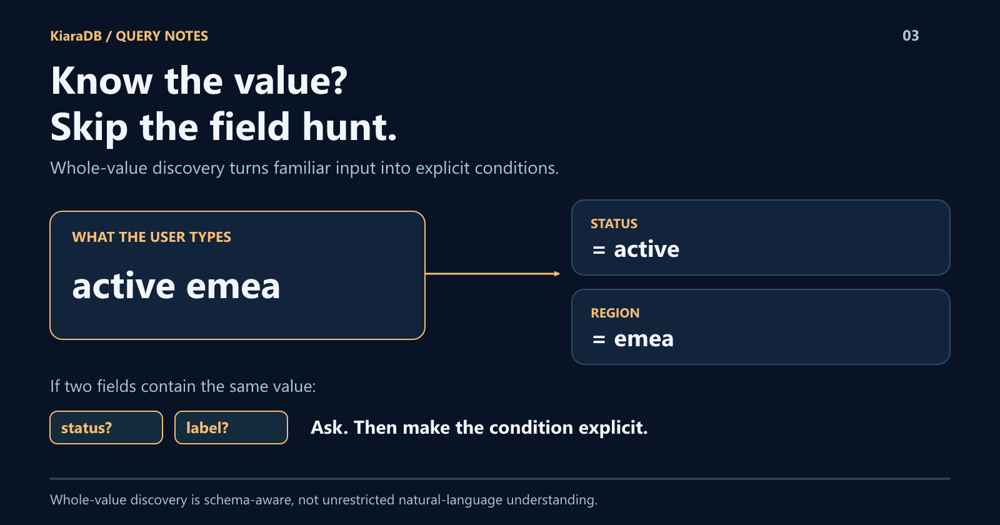
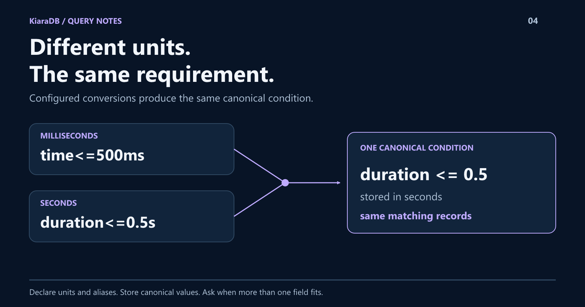
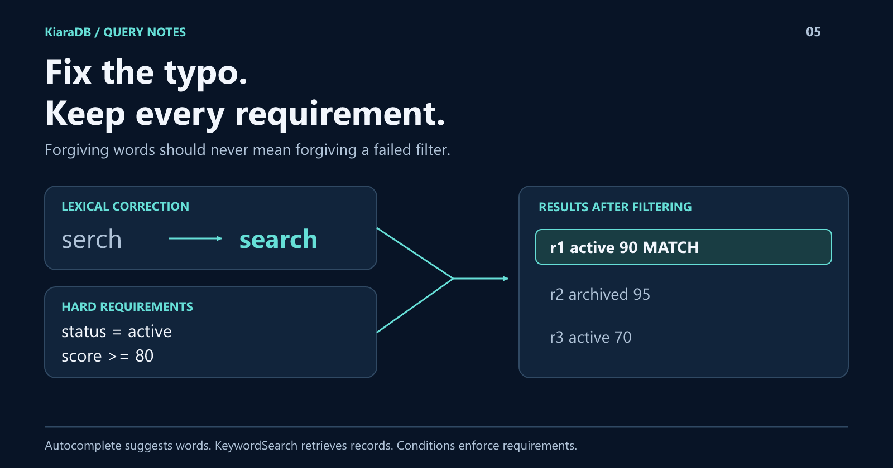
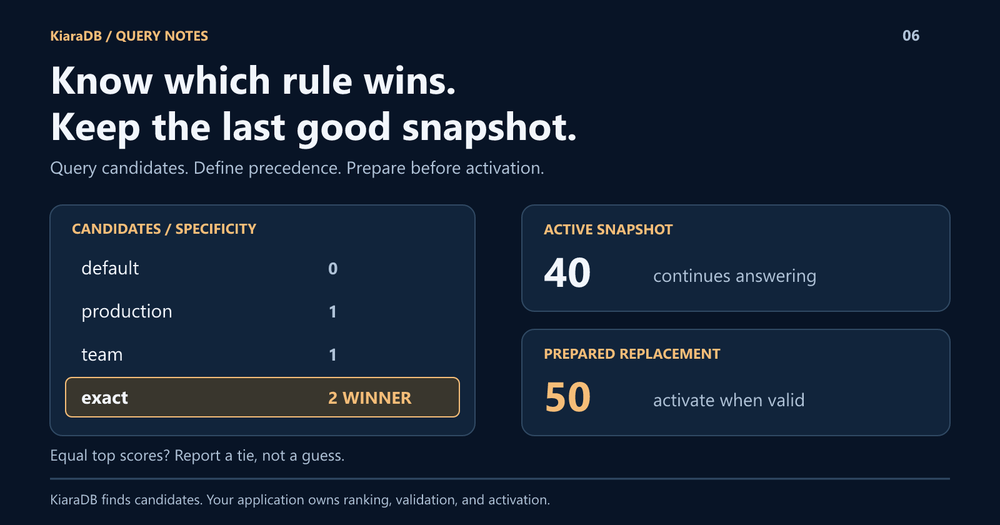
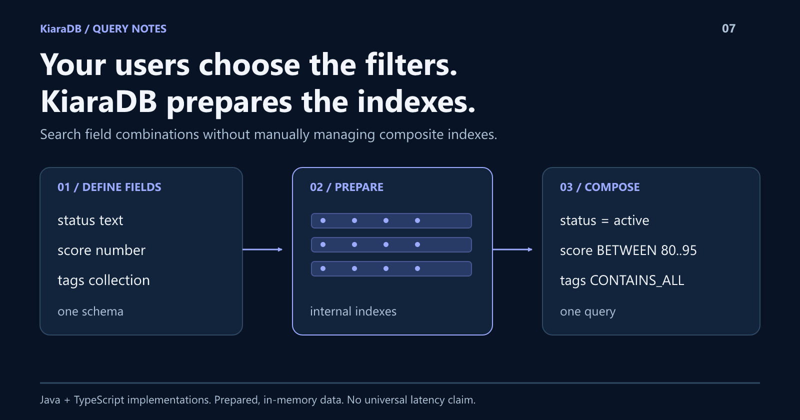

KiaraDB / campaign graphics
Seven original diagrams. 1600 x 840 PNG exports and editable SVG sources.

01 / Automatic indexing supports changing filter combinations · PNG · SVG

02 / Tags, dates, and ranges combined with AND · PNG · SVG

03 / Bare values resolve to field conditions · PNG · SVG

04 / Equivalent units produce equivalent duration queries · PNG · SVG

05 / Typo correction preserves exact filtering · PNG · SVG

06 / Explainable rule selection and snapshot replacement · PNG · SVG

07 / Schema-driven indexing and advanced filters in KiaraDB · PNG · SVG